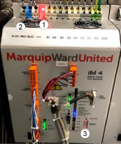

Cylinder Drive Replacement
Figure 1. Cylinder Drive Bus
Control
- Perform Safety Lockout procedure in Operation section.
- Verify the BUS indicator light is dim (Orange LED) (Item
1, figure 26).
- Use a multi-meter to check the bus leads (Item 2, figure
26).
- Check the BUS positive to neutral. Confirm the reading
is less than 5V. Use a multi-meter to check the bus leads (Item
2, Figure 26).
- Check the BUS negative to neutral. Confirm the reading
is less than 5V. Use a multi-meter to check the bus leads (Item
2, Figure 26)
- Disconnect all wiring (top, bottom, and front).
- Remove the three hex bolts on the bottom and three hex
bolts on the top of the cylinder drive.
- Remove the cylinder drive. Note the settings of the SW1,
SW2, SW3 and SW4 (Item 3, Figure 26), and set the replacement drives
switches to the same settings.
- Attach the replacement cylinder drive with the six hex
bolts.
- Reconnect all wiring.
- Set the switches to the engineering specification or
match the original cylinder drive.
- Set the SW1, SW2, SW3 and SW4 settings as noted in item
8.
- Turn the power on, performing the steps int eh Turning
Power On procedure in the Operation section.